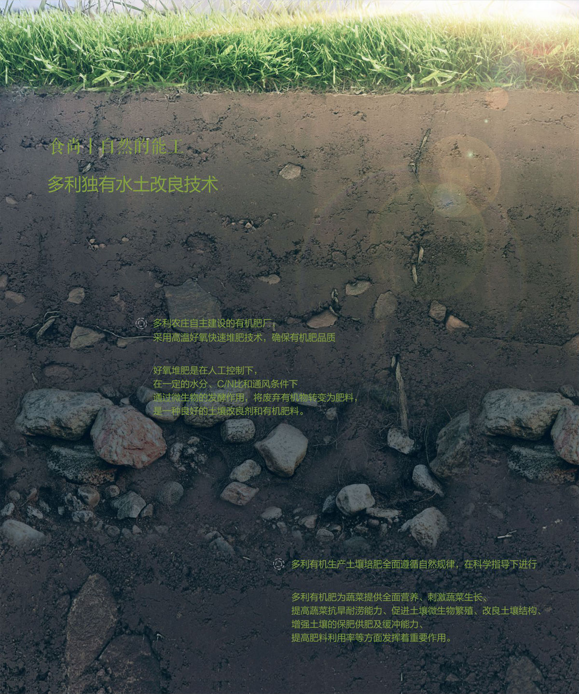

有机转化
ORGANIC
CONVERSION
多利农庄有机蔬菜在生产过程中严格按照有机种值标准，不施用化学农药、化肥、激素和其他添加剂，确保您和家人吃的安全 健康、放心。按照国际IFOAM组织的标准，为使普通土壤达到有机种植标准，需要至少三年的无害化有机转换。
独有水土改良技术
除了不使用人造化学物质，多利有机农庄产品还不含转基因成份，不允许使用辐射，动物不得非自然饲养，从而真正做到 源自自然、富营养高品质、安全环保生态。
-
我们的肥料
引进台湾中兴大学微生物发酵，自制有机肥料年产有机肥可 满足农庄的生产需求
-
我们的防虫
采用物理防虫和生物防虫两种生态防虫方式
-
我们的有机认证
多利农庄同时拥有国内权威的南京国环(OFDC)有机认证、中 国良好农业规范(GAP)认证、HACCP食品安全管理系统认证